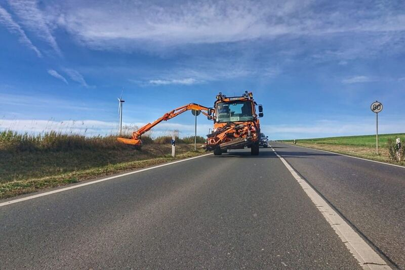
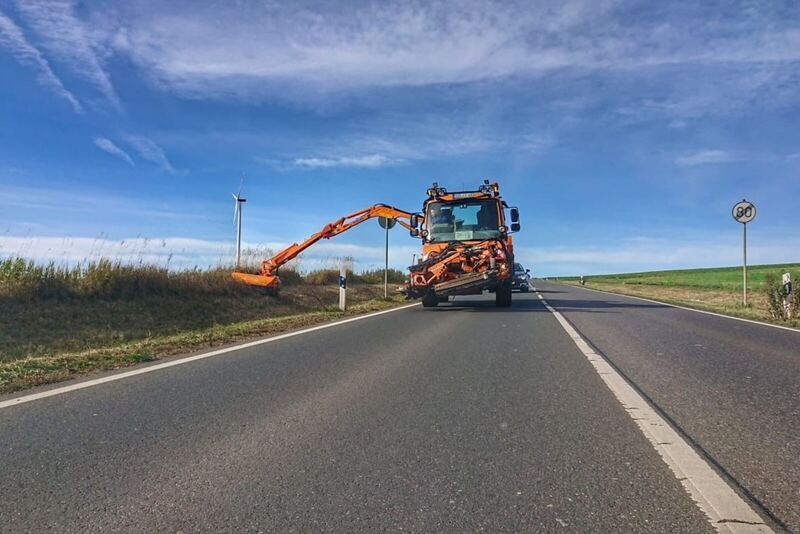

Bewegliche Arbeitsstellen
Verkehrssicherung für bewegliche Arbeitsstellen
Wir sichern Arbeitsstellen, die mit dem Verkehr mitwandern. Auf Autobahnen, Bundesstraßen, Landes- und Kreisstraßen sowie auf Gemeindestraßen.
Die Leistung
Die Arbeitsstelle fährt mit, die Sicherung auch
Beim Mähen, Kehren oder Kontrollieren bleibt die Arbeitsstelle nicht an einem Ort. Sie bewegt sich langsam am Fahrbahnrand entlang oder rückt in kurzen Abständen weiter. Für solche beweglichen Arbeitsstellen gelten eigene Regelpläne nach den Richtlinien für die Sicherung von Arbeitsstellen an Straßen, der RSA 21.
Wir stellen das Sicherungsfahrzeug mit fahrbarer Absperrtafel und das Personal dazu. Es fährt hinter der Arbeitsstelle her, warnt den nachfolgenden Verkehr und leitet ihn vorbei.

Wo wir sichern
Von der Autobahn bis zur Gemeindestraße
Jede Straßenart hat ihre eigenen Regelpläne. Wir wählen den passenden und stimmen ihn mit dem Auftraggeber und der zuständigen Behörde ab.
Autobahnen
Seitenstreifen, Mittelstreifen und Anschlussstellen. Hohe Geschwindigkeiten verlangen frühe Warnung und genügend Abstand.
Bundesstraßen
Ein- und mehrstreifige Strecken mit viel Lkw-Verkehr, außerorts wie in Ortsdurchfahrten.
Landes- und Kreisstraßen
Lange Abschnitte über Land, oft mit Kurven und Kuppen, an denen der Verkehr früh gewarnt werden muss.
Gemeindestraßen
Innerorts und auf Verbindungsstraßen, wo Radfahrer, Fußgänger und Busse mit im Spiel sind.
So läuft ein Auftrag
Von der Strecke bis zum freien Fahrstreifen
Mähen und Sichern kommen bei uns aus einer Hand. Die Sicherung gibt es aber auch einzeln, für Arbeiten anderer Firmen.
Strecke klären
Straße, Abschnitt, Art der Arbeit und Zeitraum. Daraus ergibt sich, welcher Regelplan passt.
Anordnung abstimmen
Die verkehrsrechtliche Anordnung kommt von der zuständigen Behörde. Wir stimmen den Plan vorher mit ihr und dem Auftraggeber ab.
Sichern
Sicherungsfahrzeug und Absperrtafel fahren mit der Arbeitsstelle mit, mit dem Abstand, den der Regelplan vorgibt.
Freigeben
Ist die Arbeit erledigt, räumen wir ab und geben die Strecke wieder frei.
Anfrage
Welche Strecke sollen wir sichern?
Nennen Sie uns Straße, Abschnitt, Art der Arbeit und den Zeitraum. Wir melden uns mit einem Angebot.